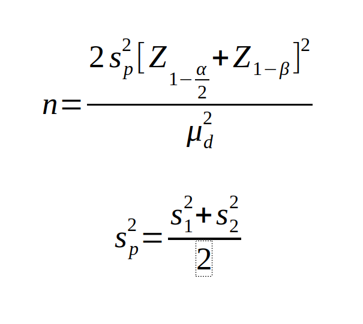

Sample Size for Hypothesis testing for two population mean
Alpha Error =
Power =
S1 =
S2 =
μd =
Result for infinte population:
Result will appear here once you enter parameters.
Know what the parameters stand for
S1 = Standard deviation in the first group
S2 = Standard deviation in the second group
μd = Mean difference between the samples
α = Significance level
1-β = Power


Nfinite = Sample size for a finite population size
n∞ = Sample size for infinite population size
N = Population size
n∞ = Sample size for infinite population size
N = Population size

Nadjusted = Sample size after considering non-response rate
N = Sample size with 0% non-response rate
N = Sample size with 0% non-response rate